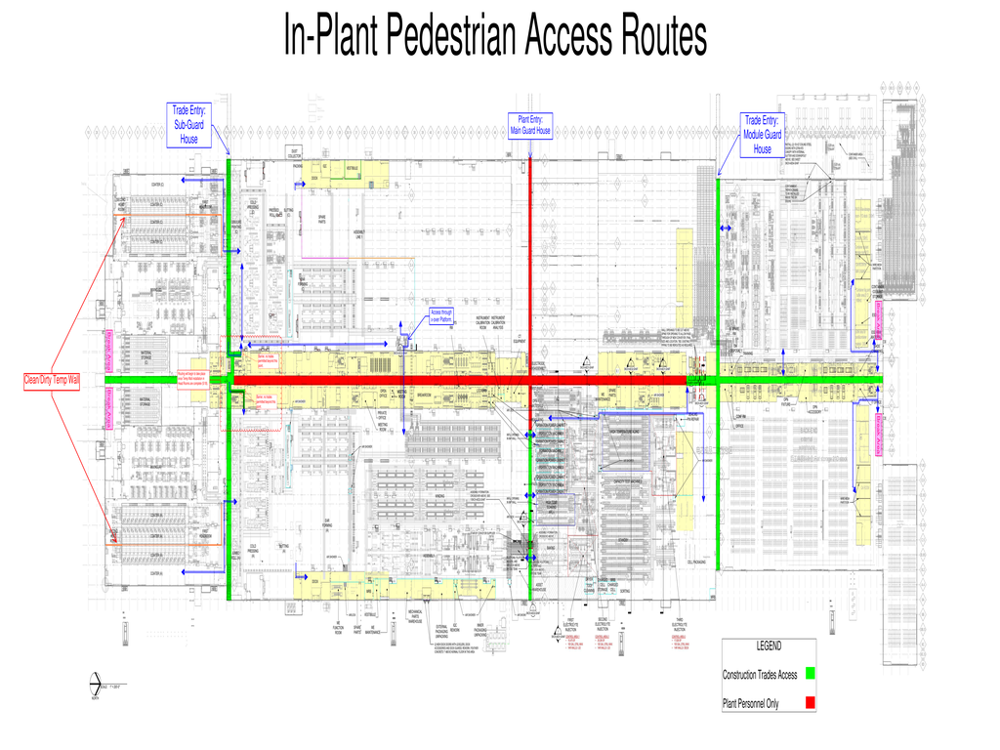

BlueOval Glendale • Ground FloorVisitor-safe guided routing
--:--System Online
Mouse wheel = zoom Drag = pan

LEGENDConstruction / Trade AccessPlant Personnel OnlyActive Route
Destination Info
Select a destination
Click a point or generate a route.
👥 Access: --
📍 Location: Ground Floor
🧭 Type: Pedestrian Guidance Destination
Route Summary
⌘ Distance --
🚶 Est. Walk Time --
🟢 Start --
🔵 End --